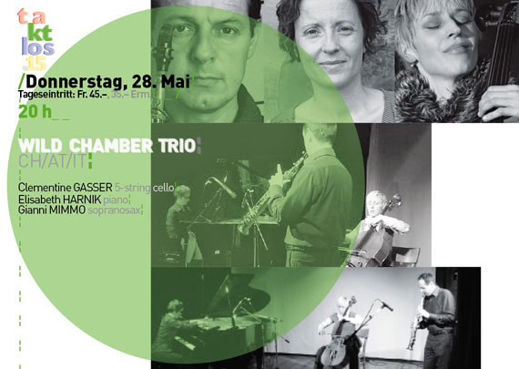
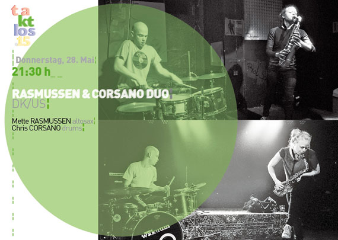
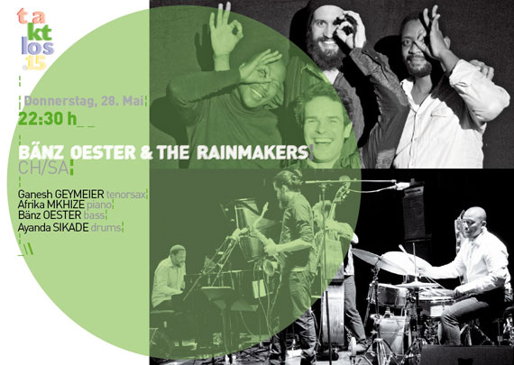

¦20 h_ _Wild Chamber Trio¦ CH/AT/IT¦ 21:30 h _Rasmussen & Corsano Duo¦ DK /US¦ ¶¶¶¶¶¶¶¶¶¶¶¶¶¶¶¶¶¶¶¶¶¶¶¶ ¶ 22:30 h _Bänz Oester & The Rainmakers ¦ CH/SA¦
| 28. Mai 2015 | ||
| 20:00 |
¦
¦_ Rote Fabrik _Zürich_ Aktionshalle__ Tageseintritt_ Fr. 45.–/35– Erm._¦~ Reservation / Vorverkauf Starticket:_Tagespass_3-Tagepass _¦__¶¶¶¶
¦
¦_ ta kt los .15 _ _Donnerstag_28. Mai_
¦
¦_20 h_ W I L D C H A M B E R T R I O__CH/AT/IT ¦_ _ Clementine GASSER cello; Elisabeth HARNIK piano; Gianni MIMMO sopranosax_¦~
¦

{kind=link}
¦
_ _Video [ ► ] _ _ [ ► ] _ _ [ ► ] _ _ [ ► ]
¦
* Ist das die Kammermusik des 21. Jahrhunderts, oder inwiefern unterscheidet sich das Wild Chamber Trio von einem Chamber Trio? Normalerweise denkt man bei den Repertoires kammermusikalisch orientierter Formationen an ausnotierte Werke von renommierten KomponistInnen. Beim Wild Chamber Trio sind die MusikerInnen gleichzeitig die KomponistInnen, aber nicht im herkömmlichen Sinn, denn sie tragen zu gleichen Teilen zum Werk bei. In der improvisierten Musik gehen diese Ideen in die frühen sechziger Jahre zurück, als Cool Jazz angesagt war und der Klarinettist Jimmy Giuffre mit dem Pianisten Paul Bley und dem Bassisten Steve Swallow zu einem schlagzeuglosen Trio zusammenfanden.¦
¦
¦ Das Wild Chamber Trio tritt mit leicht modifizierter Instrumentierung auf. Aber der aus Mailand stammende Sopransaxo-fonist Gianni Mimmo, der Erinnerungen an Steve Lacy, Evan Parker und John Butcher wachruft, die in Graz lebende Pianistin Elisabeth Harnik und die Luzerner Cellistin Clementine Gasser, die ihren Lebensmittelpunkt 1996 nach Wien verlegt hat, nutzen – im Unterschied zum Trio aus den sechziger Jahren – alle Facetten ihrer Instrumente. So kommt auch das Schlagzeug wieder ins Spiel, Cello und Piano werden durchaus auch perkussiv gespielt. Das Wild Chamber Trio zieht mit Eleganz seine Kreise, erweitert so den musikalischen Horizont. Sie nutzen ihre individuelle musikalisch-kompositorische Kraft für das improvisierte Spiel. So entsteht eine faszinierend eigenständige Musik voller Spannung und Reibung, die zwischen sensiblen schwebenden Tönen und höchster Expressivität oszilliert. Sie sind stürmisch und zart unterwegs, haben gemeinsam zu einer faszinierenden Klang-architektur gefunden. \
¦
\Ausgewählte Tonträger\ Wild Chamber Trio: «10.000 Leafs», Not Two Records, 2012¦ Gianni Mimmo: «Turbulent Flow», Amirani Records, 2012¦ Elisabeth Harnik: «irrt, irrt das ohr», Extraplatte, 2004¦ Clementine Gasser: «Pioneer 23», WKM, 2003¦
\www\ www.clementine-gasser.com ¦ www.elisabeth-harnik.at \
¦
**
¦_21:30 h_ R A S M U S S E N & C O R S A N O D U O__DK/US ¦_ _ Mette RASMUSSEN altosax; Chris CORSANO drums_¦~
¦

¦
_ _Video [ ► ]
¦
** Was lässt eine CD mit dem Titel «All the Ghosts …» anklingen? Die Jazzgeschichte natürlich und insbesondere die hymnische Komposition «Ghosts» des legendären Tenorsaxofonisten Albert Ayler (1936 – 1970). Die junge dänische Saxofonistin Mette Rasmussen, die seit einigen Jahren im norwegischen Trondheim lebt, und Chris Corsano aus New Jersey haben «All the Ghosts …» als Titel für ihr Debütalbum gewählt. Es sind zwei offene Geister, die das Risiko nicht scheuen und gleichzeitig einen starken Bezug zu verschiedenen Traditionen pflegen. Die ungebremste Energie des Punk steht da neben der des Jazz in seinen freiesten Formen. Corsano ist ein agiler und experimentierfreudiger Schlagzeuger, dem auch die Klanglichkeit balinesischer Gamelanmusik nicht fremd ist. Rasmussen nutzt alle Facetten ihres Altsaxofons, erschliesst ein Klanguniversum, das über das Gewohnte hinausgeht und durchaus auch perkussive Qualitäten hat. Es klickt, zirpt, trillert und rauscht während ihres Spiels, Klappengeräusche werden eingebunden und ergänzen ihr expressives Altsaxofonspiel.¦
¦
¦ Rasmussen und Corsano sind voller Energie, Unbekümmertheit und Neugier, immer dabei, neue Territorien zu erkunden. Corsano spielte unter anderem mit Joe McPhee, Evan Parker, Thurston Moore (Sonic Youth), aber auch mit Björk und Sunburned Hand of the Man. Ihre Musik bewegt sich zwischen Tradition, Experiment und Spontaneität. Mit Melodie und Rhythmus erzeugen sie Spannung und Reibung, wecken eine Wehmut nach Vergangenem und Zukünftigem. Es ist die Rückkehr einer tribalen musikalischen Schönheit, wie man sie auf «Interstellar Space» von John Coltrane und Rashied Ali gehört hat.\
¦
\Ausgewählte Tonträger\ Mette Rasmussen & Chris Corsano: «All the Ghosts …», Relative Pitch, 2015¦ Trio Riot (Mette Rasmussen): «Trio Riot», Efpi Records, 2014¦ Joe McPhee & Chris Corsano: «Scraps and Shadows», Roaratorio, 2012¦
\www\ www.cor-sano.com\
¦
***
¦_22.30 h_ B Ä N Z O E S T E R & T H E R A I N M A K E R S__CH/SA ¦_ _ Ganesh GEYMEIER tenorsax; Afrika MKHIZE piano; Bänz OESTER bass; Ayanda SIKADE drums/percussion_¦~
¦

{kind=link}
{kind=link}
¦
_ _Video [ ► ] _ _ [ ► ]
¦
*** Ist Philadelphia eine Stadt oder ein Käse? Für einen der Jüngsten im Publikum war es nach der Ansage des Titels «Philadelphia» klar: «Das isch en Chääs.» So geschehen Ende Februar im Rahmen von «Jazz im Seefeld» im Zürcher GZ Riesbach bei einem Konzert von Bänz Oester & The Rainmakers. Die Musiker aus Südafrika und der Schweiz spielten hin- und mitreissend. Sie pulverisierten mit ihrer Musik die 12’000 Kilometer kulturelle Distanz, die zwischen ihren Herkunftsländern liegt. Da hatten sich vier gefunden, denen der Spass an der Musik anzusehen war, die mit ihrer Kreativität nicht nur das Publikum, sondern auch ihre Mitspieler immer wieder überraschten. In bester Jazztradition sausen sie durch ein Repertoire, das vom südafrikanischen Townshipjazz genauso inspiriert ist wie von Schweizer Volksmusik und der Musik des Balkans.¦
¦
¦ Die Rainmakers, benannt nach einer kompositorischen Regenbeschwörungsformel des Pianisten Afrika Mkhize, sind seit 2012 mit steigender Frequenz unterwegs. Mkhizes Kindheit in Umbumbulu, der früheren Transkei, wurde von den Songs der Zuckerarbeiter-Innen begleitet. Das Schlagzeugspiel von Ayanda Sikade, der in East London aufwuchs, ist von der Dynamik des Township-Jive geprägt. Der Tenorsaxofonist Ganesh Geymeier aus Lausanne hat mit ethnologischem Gespür die Musik Südafrikas studiert und integriert sich hervorragend. Aus diesen Einflüssen resultiert Jazz in seiner aufregendsten Form, der gelegentlich hymnisch wie das John Coltrane Quartet klingt. Die Band des Berner Bassisten Bänz Oester begeistert das Pub-likum am Kap genauso wie in der Schweiz, und bei den Rainmakers wird gar der «Schacher Seppli» zu einem federleichten «Jazzklassiker».\
¦
\Ausgewählte Tonträger\ Bänz Oester & The Rainmakers: «Playing at the Bird’s Eye», Unit Records, 2014¦ WHO Trio «The Who Zoo», Auricle, 2013¦
Andreas Schaerer & Bänz Oester «Rarest Reechoes», Unit Records, 2013¦
\www\ www.baenzoester.com ¦ www.ganeshgeymeier.com \
{kind=link}